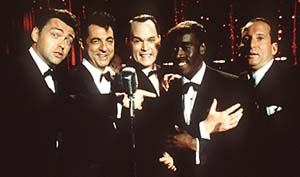

Contents | Features | Reviews | Books | Archives | Store |
 |
|
| Movie Credits | Buy It! |
The Rat Pack
Review by Elias Savada
Posted 21 August 1998
|  | Directed by Rob
Cohen Starring Ray Liotta, Joe Mantegna, Written by Kario Salem. |
There are some poignant moments (don’t blink or go to the bathroom), as the film starts with the lonesome Chairman of the Board, weakened by age and the death of his comrades, muttering before going on stage that his misses his guys. Liotta does convey the mannerisms, arrogance, and style (acutely enhanced by costume and hair stylists) of one of the 20th century’s greatest personalities, but his moments (and the rest of the quintet’s) are cut too short and the film sputters about some of the more important moments in the life of the Rat Pack: Frank’s mob and political connections, Sammy’s inter-racial affair then nuptial with Swedish starlet May Britt (Megan Dodds), the sullen Lawford’s marriage to JFK’s sister and his subsequent role as unremitting go-between for Sinatra and the White House. In an even more blatant exposure of the script’s shortcomings are the use of floating headlines, announcing weddings, divorces, break-ups, and related tragedies, to bridge huge gaps in the narrative.
The actors make every effort to sound like their original, but the master’s singing duties (the surprisingly few that there are) are relegated to voice-overs by Michael Dees, although Mantegna does warble well for Dino. Cheadle (Devil in a Blue Dress, Boogie Nights, and Picket Fences) does very well in his role as the born-again Jewish nightclub entertainer, especially showing his despair when harassed by a cross-burning Aryan public. Regretfully director Cohen’s use of surrealistic histrionics when Davis is set to perform at a DC nitery appears out of sorts from the rest of the film’s pastel realism. Production designer Hilda Stark Manos and freshman cinematographer Shane Hurlbut capture well the period tone of Vegas, the wacky planet Hollywood, and Sinatra’s luxurious digs in Palm Springs (catch for the pool and the toy train playroom to see what I mean). Visually this does help make this a somewhat more watchable production, but you still need a scorecard and program to follow the action.
Movie references (Some Came Running, Oceans 11, Sergeants 3) abound, but just one scene-behind-the-scene is reenacted, wherein producer-director Lewis Milestone gets one-upped by arrogant star Sinatra over doing a second take.
Too much, too much! I may not be a Sinatra fan, but I’d rather turn off the set and listen to any of his memorable hits than watch this forgettable sprawling condensation of a master and his comrades better remembered for their fame than their foibles.
Contents | Features | Reviews | Books | Archives | Store
Copyright © 1999 by Nitrate Productions, Inc. All Rights Reserved.